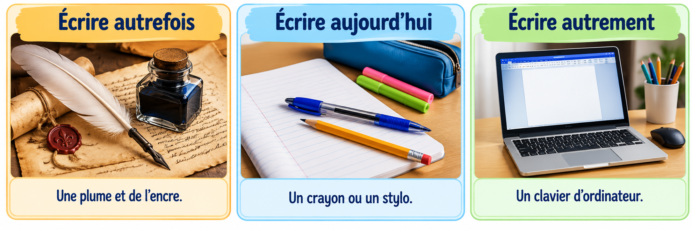
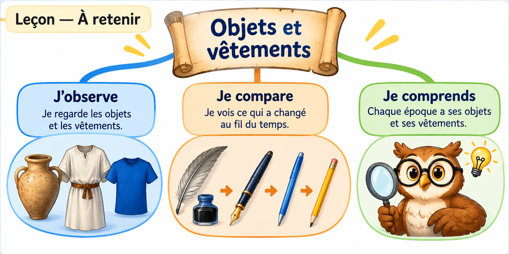

Comparer des objets et vêtements de différentes époques
Les usages restent, les objets évoluent
Je découvre
Regarde ces objets utilisés pour la même activité, mais à des époques différentes.

Qu’ont-ils en commun ? Quelles différences vois-tu ?
Je comprends
Les objets changent avec les inventions et les matériaux disponibles. Une plume, un stylo et un clavier permettent tous d’écrire.
Les vêtements aussi ont évolué : leurs formes, leurs tissus et leur fabrication ont changé. Ils servent pourtant toujours à se protéger du froid, du soleil ou de la pluie.
Je distingue : l’usage (à quoi cela sert) et l’apparence (à quoi cela ressemble).
Leçon — À retenir
